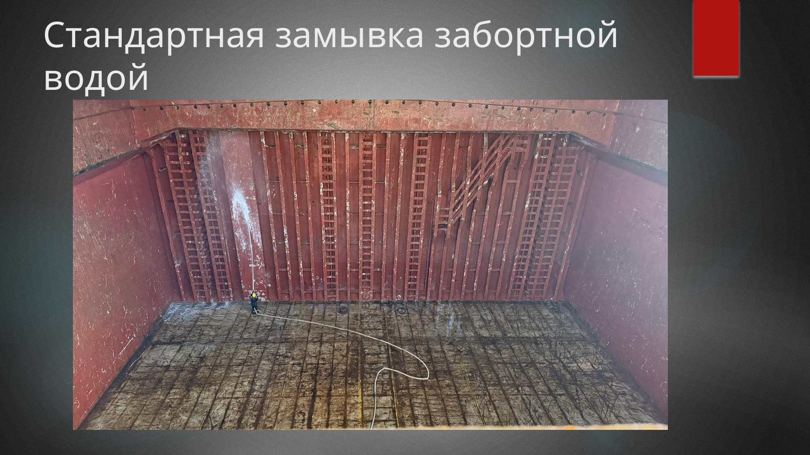

What This White Paper SolvesКакую задачу решает эта white page
Most hold cleaning guidance assumes a cleaner world than the one merchant crews actually work in. On board, hold readiness fails not only because residues remain, but because planning is late, bilges are not trusted, hatch covers are treated as a separate issue, drying is underestimated, and office pressure arrives before the ship has a defensible evidence package.
Большинство материалов по hold cleaning исходят из более “чистого” мира, чем тот, в котором реально работают гражданские экипажи. На практике hold readiness проваливается не только потому, что где-то остались residues, а потому что поздно началось planning, bilges не вызывают доверия, hatch covers вынесены за скобки, drying недооценён, а давление офиса приходит раньше, чем у судна появился defensible evidence package.
Chief mates, masters, deck officers, bosuns, and merchant ship crews preparing holds for grain or other sensitive cargoes.
Старпомы, капитаны, палубные офицеры, боцманы и экипажи, готовящие трюмы под зерно и другие чувствительные грузы.
How do you know a hold is truly ready, not just visually improved?
Как понять, что трюм действительно готов, а не просто визуально стал лучше?
Short passage, small deck team, imperfect equipment, one HP machine, uncertain coating, and commercial urgency.
Короткий переход, маленькая палубная команда, неидеальное оборудование, одна HP machine, слабое покрытие и коммерческая срочность.
A practical framework for survey readiness, not only a cleaning sequence.
Практический framework для survey readiness, а не только sequence мойки.
What Surveyors Actually CheckЧто реально проверяет сюрвейер
Surveyors do not inspect effort. They inspect defensible result. In grain-like readiness they usually move through the hold looking for the fastest reason to distrust the ship’s statement that the hold is ready.
Сюрвейер оценивает не усилия экипажа, а defensible result. В grain-like readiness он обычно идёт по трюму, ища самый быстрый повод усомниться в том, что заявление судна о готовности действительно обосновано.
- Visible residues in corners, brackets, behind pipe guards, or under deck details.
- Loose rust, loose paint flakes, or cosmetic painting that looks like disguise.
- Wet surfaces, damp hidden spots, condensation, or uncertain drying.
- Residual smell from previous cargo, chemistry, or fresh paint.
- Dirty or untrusted bilges, strainers, covers, alarms, or drainage logic.
- Dirty hatch undersides, coamings, drainage channels, and hatch-related contamination paths.
- A crew that cannot explain what was checked, what was tested, and what remains a limitation.
- Видимые residues в углах, на brackets, за защитами труб и под deck details.
- Loose rust, loose paint flakes или покраску, похожую на disguise.
- Влажные поверхности, damp hidden spots, condensation и слабый drying.
- Запах предыдущего груза, химии или свежей краски.
- Грязные или недостоверные bilges, strainers, covers, alarms и drainage logic.
- Грязные hatch undersides, coamings, drainage channels и hatch-related contamination paths.
- Ситуацию, когда экипаж не может объяснить, что было проверено, что тестировалось и какие ограничения ещё остались.

Why Merchant Crews Fail Even with a ManualПочему гражданские экипажи проваливаются даже при наличии manual
Passage is shorter than the actual cleaning scope, but the ship only admits the gap when the surveyor is already near the berth.
Переход короче, чем реальный cleaning scope, но судно признаёт разрыв только тогда, когда сюрвейер уже почти у причала.
Five deck crew for five holds is often enough for basic work, but not enough for aggressive dirty-cargo recovery plus the rest of ship routine.
Пять человек палубной команды на пять трюмов часто достаточно для базовой работы, но недостаточно для aggressive dirty-cargo recovery вместе с остальной жизнью судна.
Bilges are treated like a footer note, although they are often the first place where the entire readiness claim collapses.
Bilges воспринимаются как footer note, хотя именно там часто и ломается всё заявление о готовности.
One HP machine, weak hoses, missing nozzles, or poor chemical application gear turn a correct procedure into slow improvisation.
Одна HP machine, слабые шланги, отсутствие nozzle или poor chemical application gear превращают правильную процедуру в медленную импровизацию.
Crews often count washing hours but not drying, smell-out, ventilation, or re-wetting from bilges and hidden pockets.
Экипажи часто считают washing hours, но не считают drying, smell-out, ventilation и повторное увлажнение от bilges и hidden pockets.
The strongest ships are not those with perfect holds, but those that report reality early and turn resource limits into defendable operational decisions.
Самые сильные суда — не те, где hold идеален, а те, где реальность reported early и ресурсные ограничения превращены в defendable operational decisions.
Operational Map: From Discharge Complete to Survey ReadyОперационная карта: от окончания выгрузки до survey ready
AssessmentAssessment
Define next cargo, required cleanliness standard, and real initial hold condition with photos.
Определить next cargo, required standard и реальное исходное состояние трюмов с фотофиксацией.
ReadinessReadiness
Check people, HP machine, chemicals, bilges, access, PPE, lighting, and likely time deficit.
Проверить людей, HP machine, chemicals, bilges, access, PPE, lighting и вероятный дефицит времени.
Dry CleaningDry Cleaning
Residues, dunnage, lashings, sweep, migration control, and first separation between cleaning and maintenance.
Residues, dunnage, lashings, sweep, migration control и первое разделение между cleaning и maintenance.
Choose BranchВыбрать ветку
Water only, alkali cleaner, acid cleaner, cement/clinker branch, or AQIS-expanded scope.
Water only, alkali cleaner, acid cleaner, ветка cement/clinker или AQIS-expanded scope.
Critical DetailsКритические детали
Bilges, hatch covers, coamings, drain channels, ladders, lower details, and hidden smell/moisture points.
Bilges, hatch covers, coamings, drain channels, ladders, lower details и скрытые точки по smell/moisture.
Drying and SurveyDrying и Survey
Ventilate, dry, self-inspect like a surveyor, build evidence package, then pass survey or escalate limits honestly.
Провентилировать, высушить, пройти self-inspection как сюрвейер, собрать evidence package и либо пройти survey, либо честно эскалировать ограничения.
Cargo Profile and Likely Cleaning BranchПрофиль груза и вероятная cleaning branch
| Previous cargoПредыдущий груз | Typical targetТиповой target | Likely branchВероятная ветка | Frequent failure pointЧастая точка провала |
|---|---|---|---|
| Coal / coke / petcoke / oily organic residuesCoal / coke / petcoke / oily organic residues | Grain clean or another high standard for next sensitive cargoGrain clean или другой высокий standard под следующий чувствительный груз | Alkali cleaner + full dry cleaning + FW rinseAlkali cleaner + полный dry cleaning + FW rinse | Film, dark corners, smell, dirty bilges, false confidence after first washПлёнка, тёмные углы, запах, грязные bilges, ложная уверенность после первой замывки |
| Bauxite / bentonite / chrome ore / mineral crustBauxite / bentonite / chrome ore / mineral crust | From normal clean to grain clean depending on next cargoОт normal clean до grain clean в зависимости от next cargo | Acid cleaner after test patchesAcid cleaner после test patches | Wrong dilution, coating sensitivity, incomplete flushingНеправильное dilution, слабая coating compatibility, incomplete flushing |
| Cement / clinker / gypsumCement / clinker / gypsum | High standard with special sequenceВысокий standard со специальной последовательностью | Dry removal first, chemical early, water only laterСначала dry removal, химия рано, water только позже | Early water use, hardened scale, bilge chokingСлишком ранняя вода, hardened scale, забитые bilges |
| Grain / sugar / salt / urea / light dry cargoesGrain / sugar / salt / urea / light dry cargoes | Often water-based route if initial condition is already under controlЧасто water-based route, если исходное состояние уже под контролем | Dry clean + water wash + drying + bilges controlDry clean + water wash + drying + контроль bilges | Skipping dry stage, wet hold, loose flakesПропуск dry stage, влажный hold, loose flakes |
Four Blocks That Decide Whether the Survey PassesЧетыре блока, которые решают, пройдёт ли survey



Surveyors often distrust a hold because contamination can return from hatch undersides, coamings, drainage channels, wet details, or residual smell. A hold is not ready just because the tank top looks better.
Сюрвейер часто перестаёт доверять hold не из-за tank top, а из-за того, что загрязнение может вернуться с hatch undersides, coamings, drainage channels, влажных деталей или residual smell. Трюм не ready только потому, что визуально tank top стал лучше.
Where Good Chief Mates Separate from Tired OnesГде сильный старпом отделяется от уставшего
The strongest chief mate is not the one who pushes the team blindly to “finish at any cost”. The strongest one is the officer who sees when the system is already leaving the safe and defensible zone.
Сильный старпом — не тот, кто слепо дожимает команду “любой ценой”. Сильный старпом — тот, кто видит момент, когда система уже выходит из безопасной и defendable зоны.
- Request shore gang early if the gap is structural, not emotional.
- Separate “must do to pass” from “nice cosmetic improvement”.
- Do not let painting, polishing, or visual theater replace drying, bilges, and hatch integrity.
- Record people, hours, weather, equipment, and what ship work had to be sacrificed.
- Stop promising impossible finish times just to calm the office for one email cycle.
- Запрашивать shore gang рано, если разрыв структурный, а не эмоциональный.
- Отделять “must do to pass” от “nice cosmetic improvement”.
- Не позволять painting, polishing и visual theater подменять drying, bilges и hatch integrity.
- Фиксировать людей, часы, weather, equipment и то, какой ship work пришлось пожертвовать.
- Не обещать невозможные finish times только ради одного успокаивающего письма в офис.
Pre-Survey Checklist That Actually MattersPre-survey checklist, который действительно имеет значение
- The required cleanliness standard is explicit, not assumed.
- The hold is visually clean in details, not only on tank top.
- No loose rust and no loose paint flakes are left in active contamination zones.
- Bilges are clean, dry, covered, and trusted.
- Hatch undersides, coamings, drainage channels, and obvious hatch defects are checked.
- Smell is acceptable and paint or chemicals are not still dominating the space.
- Drying is confirmed by touch and not only by distance.
- Officer is ready to accompany the surveyor and answer route-specific questions.
- Photos exist for initial condition, work in progress, and final status.
- The ship can explain what was done, what remains a limitation, and why its statement is still defensible.
- Required cleanliness standard назван явно, а не подразумевается.
- Hold визуально чист в деталях, а не только по tank top.
- В активных contamination zones не осталось loose rust и loose paint flakes.
- Bilges чистые, сухие, накрыты и вызывают доверие.
- Hatch undersides, coamings, drainage channels и очевидные hatch defects проверены.
- Smell приемлем, а запах краски или химии уже не dominates the space.
- Drying подтверждён рукой и осмотром, а не только взглядом издалека.
- Офицер готов сопровождать surveyor и отвечать на route-specific questions.
- Есть фото исходного состояния, work in progress и final status.
- Судно может объяснить, что было сделано, какие ограничения остались и почему его позиция всё ещё defensible.
ConclusionВывод
Cargo hold preparation is not a dirty side-task delegated to the deck crew after discharge. It is one of the clearest operating tests of a chief mate, a master, and the whole support chain around the ship.
Подготовка грузовых помещений — не “грязная побочная работа”, которую можно просто передать палубной команде после discharge. Это один из самых наглядных operational tests старпома, капитана и всей support chain вокруг судна.
If the system is strong, even a difficult hold can become survey-ready. If the system is weak, even a good manual turns into a list of beautiful instructions that do not save the crew from rejection, delay, and avoidable pressure.
Если система сильная, даже тяжёлый hold можно довести до survey-ready состояния. Если система слабая, даже хороший manual превращается в список красивых инструкций, которые не спасают экипаж от rejection, delay и лишнего давления.